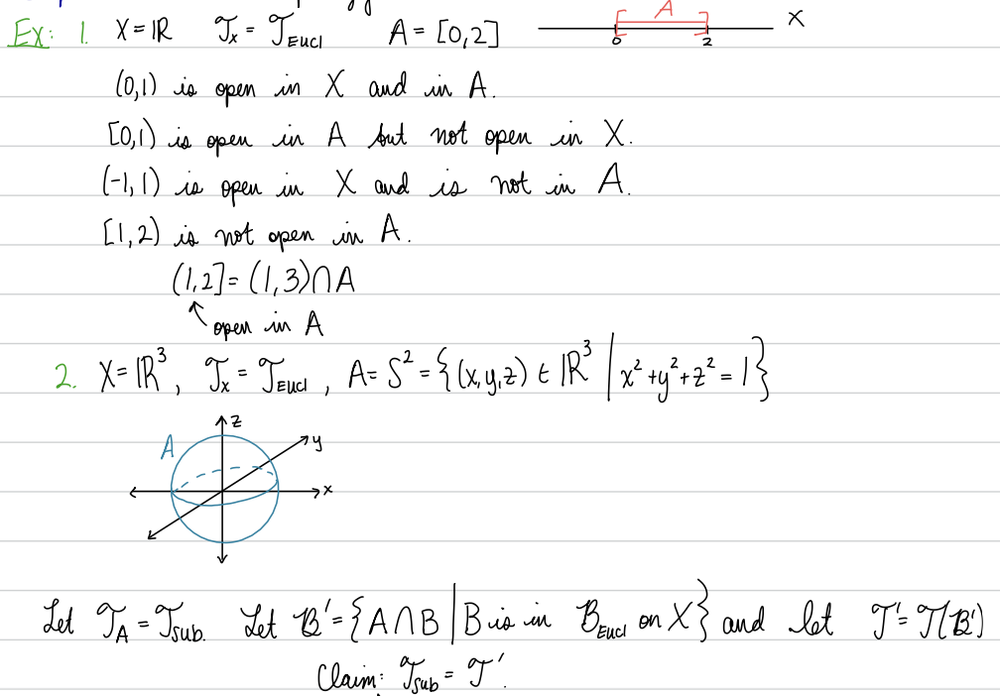
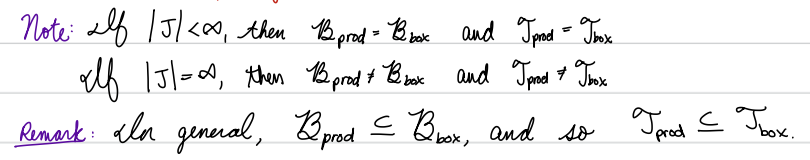
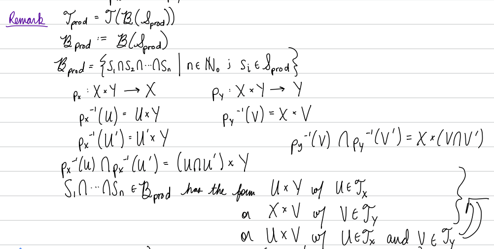
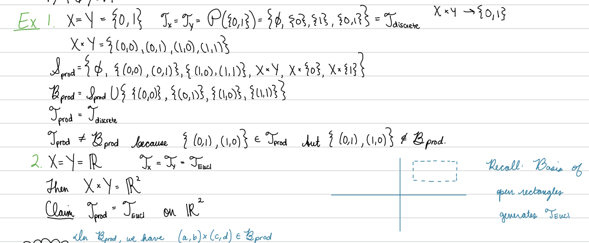
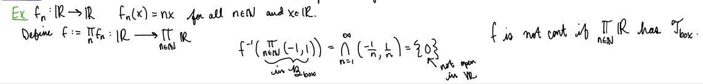

Section2.2Constructing New Spaces and Continuous Functions from Old Ones
“Construction is a matter of optimism; it's a matter of facing the future with confidence.”
―Cesar Pelli
Subsection2.2.1Subspaces
Definition2.2.1.Subspace Topology.
Let \(X\) be a topological space and let \(A\) be a subset of \(X\text{.}\) The subspace topology on \(A\) is \(\cT_{\text{sub}} := \{U \cap A | U is an open set in X\}\text{.}\) The set \(A\) with the subspace topology is called a subspace of \(X\text{.}\) An element \(V\) of the subspace topology on \(A\) is called open in \(A\) or open set relative to \(A\) or open rel \(A\text{.}\)
Remark2.2.2.
"Open in \(A\)" does not mean open and contained in \(A\text{.}\)
In mathematical writing, always specify "open in__", never write just "open".
Proposition2.2.3.
The subspace topology is a topology.
Example2.2.4.

Theorem2.2.5.CC3.
If \(A\) is a subspace of \(X\text{,}\) then the inclusion map \(i:A \to X\) is continuous.
Theorem2.2.6.
If \(A\) is a subspace of \(B\) and \(B\) is a subspace of \(C\) then \(A\) is a subspace of \(C\text{.}\)
Proposition2.2.7.
Given a topological space \(X\) with topology \(\cT (\cB )\) generated by a basis \(\cB \text{,}\) and given and \(Y \sse X\text{,}\) the subspace topology on \(Y\) equals the topology generated by the basis \(\cB sub = \{ B \cap Y | B \in \cB \}\text{.}\)
Definition2.2.8.Restrictions and Extensions.
Let \(X\) and \(Y\) be sets, let \(A\) be a subset of \(X\text{,}\) let \(Z\) be a set containing \(Y\text{,}\) and let \(f:X \to Y\) be a function.
The restriction of \(f\) to the domain \(A\) is the function \(f|A:A \to Y\) defined by \(f|A(a) := f(a)\) for all a \in \(A\text{.}\)
The extension of \(f\) to the codomain \(Z\) is \(f|Z:X \to Z\) defined by \(f|Z(p) := f(p)\) for all \(p \in X\text{.}\)
If \(B\) is a subset of \(Y\) containing the image \(f(X)\) of \(f\text{,}\) then the restriction of \(f\) to the codomain \(B\) is the function \(f|B:X \to B\) defined by \(f|B(p) := f(p)\) for all \(p \in X\text{.}\)
Theorem2.2.9.Restrictions and Extensions of Continuous Functions are Continuous.
Let \(X\) and \(Y\) be topological spaces, let \(A\) be a subspace of \(X\text{,}\) and let \(B\) be a subspace of \(Y\text{.}\)
CC4.
The inclusion \(i: A \to X\) is continuous.
CC5.
If \(f: X \to \)Y is continuous, then \(f|A: A \to Y\) is continuous.
CC6.
If \(f: X \to Y\) is continuous and \(f(X) \sse B\text{,}\) then \(f|B: X \to B\) is continuous.
CC7.
If \(f: X \to B\) is continuous then \(f|Y: X \to Y\) is continuous.
Theorem2.2.10.CC8.
Let \(X\) be a topological space and suppose that \(X = \cup \alpha U\alpha\) with each \(U\alpha\) open in \(X\text{.}\) Let each \(U\alpha\) have the subspace topology from \(X\text{.}\) If \(f: X \to Y\) is a function satisfying \(f|U\alpha : U\alpha \to Y\) is continuous for all \(\alpha\text{,}\) then \(f\) is continuous.
Definition2.2.11.Embedding.
An embedding of a topological space \(X\) in a topological space \(Y\) is a map \(f:X \to Y\) such that the restriction \(f|f(X):X \to f(X)\) of \(f\) to the codomain \(f(X)\text{,}\) with the subspace topology on \(f(X)\) from \(Y\text{,}\) is a homeomorphism.
Corollary2.2.12.
If \(A\) is a subspace of \(X\text{,}\) then the inclusion map \(i:A \to X\) is an imbedding.
Example2.2.13.
Examples of homeomorphic Euclidean subspaces
Subsection2.2.2Product spaces
Definition2.2.14.Product Topology and Box Topology.
Let \((X_\alpha,\cT_\alpha )\) be a topological space for each index \(\alpha \in J\text{,}\) and let \(\prod_\alpha X_\alpha\) be the Cartesian product of the spaces \(X_\alpha\text{.}\) For each index \(\beta\text{,}\) let \(p_\beta : \prod_\alpha X_\alpha \to X\beta\) be the projection map.
The product topology on \(\prod_\alpha X_\alpha\) is the topology \(\cT_{\text{prod}} := \cT (\cS prod)\) generated by the product subbasis \(\cS prod := \{ p_\beta -1(U\beta ) | \beta \in J and U\beta \in \cT \beta \}\text{.}\) The set \(\prod_\alpha X_\alpha\) with the product topology is called a product space.
The box topology on \(\prod_\alpha X_\alpha\) is the topology \(\cT_{\text{box}} := \cT (\cB box)\) generated by the box basis \(\cB box := \{\prod_\alpha U\alpha | U\alpha is open in X_\alpha for all indices \alpha \}\text{.}\)
Proposition2.2.15.
The product subbasis is a subbasis.
The box basis is a basis.
For a collection of spaces \((X_\alpha,\cT_\alpha )\) for \(\alpha \in J\text{,}\)\(\cT_{\text{prod}} \sse \cT_{\text{box}}\text{,}\) and if \(J\) is finite then \(\cT_{\text{prod}} = \cT_{\text{box}}\text{.}\)
Remark2.2.16.

Example2.2.17.
Proposition2.2.18.
For a collection of spaces \((X_\alpha,\cT_\alpha )\) the product topology on \(\prod X_\alpha\) equals the product generated by the basis \(\cB_{\text{prod}} = \{ \prod B_\alpha | B_\alpha \in \cT_\alpha \text{ for all }\alpha, and B_\alpha = X_\alpha \text{ for all but finitely many }\alpha \}\text{.}\) (The collection \(\cB_{\text{prod}}\) is called the product basis.)
Proposition2.2.19.CC9.
Let \(X_\alpha\) be a topological space for each index \(\alpha\text{,}\) and let \(\prod_\alpha X_\alpha\) have the product topology. Then for each index \(\beta\text{,}\) the projection map \(p_\beta\) : \(\prod_\alpha X_\alpha \to X\beta\) is continuous.
Remark2.2.20.

Theorem2.2.21.
Let \(X = \R^n\text{.}\) Let \(\cT_{\text{Eucl}}\) be the Euclidean topology on \(X\text{,}\) and let \(\cT_{\text{prod}}\) be the product topology on \(X\) induced by the Euclidean topology on each of the \(\R^1\) factors. Then \(\cT_{\text{Eucl}} = \cT_{\text{prod}}\text{.}\)
Example2.2.22.

Theorem2.2.23.CC10.
Let \(X_\alpha\) be a topological space for each index \(\alpha\) in an index set \(J\text{,}\) and let \(\prod_\alpha X_\alpha\) have the product topology. Let \(\beta \in J\text{,}\) and for each \(\alpha \in J\setminus \{\beta \}\text{,}\) let \(p_\alpha\) be an (particular choice of) element of \(X_\alpha\text{.}\) Then the associated product inclusion map \(i\beta : X\beta \to \prod_\alpha X_\alpha\) is an imbedding.
Definition2.2.24.Product Function.
Let \(A\) be a set, and for each \(\alpha\) in an index set \(J\) let \(X_\alpha\) be a set and let \(f_\alpha :A \to X_\alpha\text{.}\) The product function \((f_\alpha )_{\alpha \in J}: A \to \prod X_\alpha\) is defined by \((f_\alpha )_{\alpha \in J}(a) := (f_\alpha (a)){\alpha \in J}\) for all \(a \in A\text{.}\)
Lemma2.2.25.
Let \(A\) be a set, and for each \(\alpha\) let \(X_\alpha\) be a set. Then:
Each function \(f: A \to \prod X_\alpha\) is a product function \(f = (f_\alpha )_\alpha\) such that \(f_\alpha : A \to X_\alpha\) is defined by \(f_\alpha := p_\alpha \circ f\) for each index \(\alpha\text{.}\)
Given functions \(g_\alpha :A \to X_\alpha\) for each \(\alpha in J\text{,}\) the product function \(g := (g_\alpha )_{\alpha \in J}\) satisfies \(g_\alpha = p_\alpha \circ g\) for all \(\alpha\text{.}\)
Theorem2.2.26.CC11.
Let \(A\) be a topological space, and for each index \(\alpha\) let \(X_\alpha\) be a topological space. Let \(\prod X_\alpha\) have the product topology and let \(f: A \to \prod X_\alpha\text{.}\) Then \(f\) is continuous if and only if \(p_\alpha \circ f\) is continuous for all \(\alpha\text{.}\)
Example2.2.27.

Theorem2.2.28.
Let \(A_\alpha\) be a subspace of a space \(X_\alpha\) for all \(\alpha\text{.}\) Let \(\cT_{\text{prod}}\) be the product topology on \(\prod_\alpha A_\alpha\text{.}\) Let \(\cT_{\text{sub}}\) be the subspace topology on \(\prod_\alpha A_\alpha\) induced by the product topology on \(\prod_\alpha X_\alpha\text{.}\) Then \\(cT_{\text{prod}} = \cT_{\text{sub}}\text{.}\)
Subsection2.2.3Quotient = identification spaces
Definition2.2.29.Quotient Topology.
Let \(X\) be a topological space and let \(\sim\) be an equivalence relation on \(X\text{.}\) Let \(X/\sim\) be the set of equivalence classes and let \(q: X \to X/\sim\) be the equivalence map (defined by \(q(p) := [p]\) for all \(p\) in \(X\)). The quotient topology, or identification topology on \(X/\sim\) induced by \(\sim\text{,}\) is the topology \(\cT \sim = \cT quo:= \{U \sse X/\sim | q\inv(U) \text{ is open in }X\}\text{.}\) The set \(X/\sim\) together with the quotient topology is called a quotient space of \(X\text{,}\) and the equivalence map \(q\) is called the quotient map induced by\(\sim\text{.}\)
Proposition2.2.30.
The quotient topology is a topology.
Proposition2.2.31.
CC12-i.
If \(X/\sim\) is a quotient space of \(X\) and \(q: X \to X/\sim\) is the equivalence map (defined by \(q(p) := [p]\) for all \(p \in X\)), then \(q\) is a continuous surjection.
The quotient topology induced by an equivalence relation is the largest topology on the set of equivalence classes for which the equivalence map is continuous.
Definition2.2.32.Induced Quotient Topology.
Let \((X,\cT_X)\) be a topological space, let \(Y\) be a set, and let \(f:X \to Y\) be a surjective function. The quotient topology on \(Y\) induced by\(f\) is \(\cT_q := \{V \sse Y | f\inv(V) \in \cT_X\}\text{.}\) If \(Y\) has the quotient topology induced by \(f\) then \(f\) is called a quotient map.
Proposition2.2.33.
The quotient topology induced by a function \(f\) is a topology.
Proposition2.2.34.
CC12-ii.
If \(f\) is a quotient map, then \(f\) is a continuous surjection.
The quotient topology induced by a map \(f\) is the largest topology on the codomain of \(f\) for which the map \(f\) is continuous.
Proposition2.2.35.
Let \(X\) be a topological space.
If \(\sim\) is an equivalence relation on \(X\text{,}\) then the quotient topology on \(X/\sim\) induced by \(\sim\) equals the quotient topology on \(X/\sim\) induced by the equivalence map \(q:X \to X/\sim\) (defined by \(q(p) := [p]\) for all \(p \in X\)).
If \(f:X \to Y\) is a surjection, then the quotient space \((Y,\cT f)\) is homeomorphic to the quotient space \((X/\sim,\cT \sim )\) induced by the equivalence relation on \(X\) defined by \(x \sim x'\) if and only if \(f(x) = f(x')\) for all \(x,x' \in X\text{;}\) moreover, the homeomorphism \(g:X/\sim \to Y\) satisfies \(g \circ q = f\text{,}\) where \(q\) is the equivalence map.
Example2.2.36.
Examples
\(1\)-dimensional examples: Quotients of a line segment \([0,1]\text{:}\)
Theorem2.2.37.
Let \(X = [0,1]\) have the Euclidean subspace topology, and let \(\sim\) be the equivalence relation on \(X\) defined by \(p \sim q\) if and only if either \([p=q]\) or \([\{p,q\} = \{0,1\}]\text{.}\) Then the quotient space \(X/\sim\) is isomorphic to \(S^1\text{.}\)
Definition2.2.38.\(2\)-dimensional (surface) examples: Quotients of the square \([0,1] \times [0,1]\text{:}\).
Let \(X = [0,1] \times [0,1]\) have the product topology (where each \([0,1]\) has the Euclidean subspace topology).
The torus \(T^2\) is the quotient space \(X/\sim\) where \(\sim\) is the equivalence relation on \(X\) generated by \((r,0) \sim (r,1)\) and \((0,s) \sim (1,s)\) for all \(r,s \in [0,1]\text{.}\)
The Klein bottle \(K^2\) is the quotient space \(X/\sim\) where \(\sim\) is the equivalence relation on \(X\) generated by \((r,0) \sim (r,1)\) and \((0,s) \sim (1,1-s)\) for all \(r,s \in [0,1]\text{.}\)
The Mobius band \(M^2\) is the quotient space \(X/\sim\) where \(\sim\) is the equivalence relation on \(X\) generated by \((0,s) \sim (1,1-s)\) for all \(s \in [0,1]\text{.}\)
Definition2.2.39.
The projective plane \(P^2\) is the quotient space \(P^2 := S^2/\sim\) where \(S^2 := \{(x,y,z) \in \R^3 | x^2 + y^2 + z^2 = 1\}\) is the \(2\)-sphere (with the Euclidean subspace topology) and \(\sim\) is the equivalence relation generated by \((x,y,z) \sim (-x,-y,-z\)) for all \((x,y,z) \in S^2\text{.}\)
Theorem2.2.40.
Let \(X = [0,1] \times [0,1]\) have the product topology (where each \([0,1]\) has the Euclidean subspace topology).
The cylinder \(S^1 \times [0,1]\) is homeomorphic to the quotient space \(X/\sim\) where \(\sim\) is the equivalence relation on \(X\) generated by \((r,0) \sim (1,r)\) for all \(r \in [0,1]\text{.}\)
The projective plane \(P^2\) is homeomorphic to the quotient space \(X/\sim\) where \(\sim\) is the equivalence relation on \(X\) generated by \((r,0) \sim (1-r,1)\) and \((0,1-s) \sim (1,s)\) for all \(r,s \in [0,1]\text{.}\)
The \(2\)-sphere \(S^2\) is homeomorphic to the quotient space \(X/\sim\) where \(\sim\) is the equivalence relation on \(X\) generated by \((r,0) \sim (0,r)\) and \((s,1) \sim (1,s)\) for all \(r,s \in [0,1]\text{.}\)
The torus \(T^2\) is homeomorphic to the product space \(S^1 \times S^1\) where each \(S^1\) has the Euclidean subspace topology.
Theorem2.2.41.CC13 and CQ1: CFBT = "Continuous Function Building Theorem for quotient spaces".
Let \(X\) and \(Z\) be topological spaces, let \(\sim\) be an equivalence relation on \(X\text{,}\) let \(q: X \to X/\sim\) be the equivalence map, and let \(X/\sim\) have the quotient topology. Suppose that \(f: X \to Z\) is a continuous function that is constant on equivalence classes. Then:
The map \(f\) induces a continuous function \(g: X/\sim \to Z\) with \(g \circ q = f\text{.}\)
If \(f\) is onto then \(g\) is onto.
If \(f\) is a quotient map, then \(g\) is a quotient map.
If \([f(x)=f(x')\) implies \(q(x)=q(x')\) for all \(x,x' \in X\)] then \(g\) is one-to-one.
If \(f\) is a quotient map and (3) holds then \(g\) is a homeomorphism.
Definition2.2.42.
Let \(X\) and \(Y\) be topological spaces. An open map from \(X\) to \(Y\) is a function \(f:X \to Y\) such that for every open set \(V\) in \(X\text{,}\) the image \(f(V)\) is open in \(Y\text{.}\)
Proposition2.2.43.
CO1.
A composition of open functions is open.
CO2.
If \(X_\alpha\) has the topology \(\cT_\alpha\) for each \(\alpha \in J\text{,}\) and \(\prod_{\alpha \in J}_{X_\alpha}\) has the product topology, then the projection map \(p_\beta : (\prod_{\alpha \in J} X_\alpha ) \to X\beta \) is open.
If \(f:X \to Y\) is an open function and if \(B\) is a subspace of \(Y\) satisfying \(f(X) \sse B \sse Y\text{,}\) then \(f|B\) is an open map.
CO3.
A finite product of open maps is open.
Theorem2.2.44.CQ2.
If \(f: X \to Z\) is continuous, onto, and open, then \(f\) is a quotient map.
Proposition2.2.45.
There exist quotient maps that are not open maps.
Definition2.2.46.
A retraction of a topological space \(X\) to a subspace \(A\) is a continuous function \(r:X \to A\) satisfying \(r(a) = a\) for all \(a \in A\text{.}\)
Theorem2.2.47.CQ3.
Every retraction is a quotient map.
Definition2.2.48.
Let \((X,\cT_X)\) and \((Y,\cT_Y)\) be topological spaces with \(X \cap Y = \es\text{.}\) The disjoint union topology on \(X \cup Y\) is \(\cT ∐ = \{ U \cup V | U \in \cT_X and V \in \cT_Y \}\text{.}\)
Definition2.2.49.
Let \(X_1\) and \(X_2\) be disjoint topological spaces, let \(A_i\) be a subspace of \(X_i\) for each \(i\text{,}\) and let \(f : A_1 \to A_2\) be a continuous function. The disjoint union of \(X_1\) and \(X_2\) glued along \(f\text{,}\) denoted \(X_1 ∐f X_2\) is defined to be the quotient of the disjoint union space \(X_1 \cup X_2\) associated to the the smallest equivalence relation \(\sim\) such that \(a \sim f(a)\) for all \(a\) in \(A_1\text{.}\)
Theorem2.2.50.
If \(A_i\) is a subspace of \(X_i\) for \(i = 1,2\) and \(f : A_1 \to A_2\) is continuous, then the function \(g: X_2 \to X_1 ∐f X_2\) defined by \(g(p) := [p]\) (for all \(p \in X_2\)) is an embedding.
Theorem2.2.51.
Let \(Z\) be a topological space, let \(A\) be an open set in \(Z\text{,}\) and let \(\sim\) be an equivalence relation on \(Z\) satisfying the property that for each \(a \in A\text{,}\) the equivalence class of a satisfies \([a] = \{a\}\text{.}\) If \(A\) has the subspace topology and \(Z/\sim\) has the quotient topology, then the function \(g: A \to Z/\sim\) defined by \(g(a) := [a]\) for all \(a \in A\) is an embedding.
Theorem2.2.52.
Let \(X\) be a topological space, let \(\sim\) be an equivalence relation on \(X\text{,}\) and let \(q:X \to X/\sim\) be the quotient map. Let \(A\) be a subspace of \(X\) and let \(q(A)\) have the subspace topology in \(X/\sim\text{.}\)
The relation \(\approx\) on \(A\) defined by \([a \approx a'\) if and only if \(a \sim a'\) for all \(a,a' \in A]\) is an equivalence relation on \(A\text{.}\)
If \(A = q\inv(q(A))\) and \(A\) is either an open or closed subset of \(X\text{,}\) then the the function \(q|Aq(A):A \to q(A)\) is a quotient map and the function \(h: A/\approx \to q(A)\) defined by \(h([a]) := [h(a)]\) for all\([a] \in A/\approx\) is a homeomorphism.